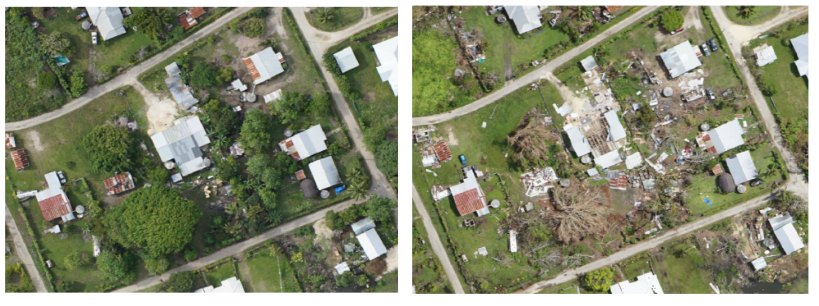
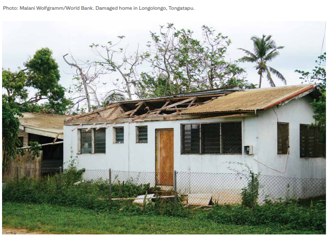

11. Case Study: Post–Tropical Cyclone Gita Mission in Tonga
On February 12, 2018, Tropical Cyclone Gita hit the island nation of Tonga as a Category 4 hurricane, causing major damage across Tongatapu, the main island, as well as the neighboring island of Eua. The total economic loss was estimated at approximately 38 percent of gross domestic product, triggering international support for long-term recovery. At the request of Tonga’s National Emergency Management Office, the UAV4Resilience (UAV4R) team deployed to Tonga to capture post-disaster UAV aerial images.
The main challenge was to fly as quickly as possible while still meeting all regulatory requirements. Because the plan was to fly above 400 ft, the team had to seek additional permission from the Civil Aviation Authority, just as for the October 2017 field-test missions. The approval process took three weeks to complete and modifying any flight plans for complex airspace operations took between one day and one week (more detail is in annex 1). The logistics involved in reaching the island were also challenging. Eventually, the Australian Department of Foreign Affairs and Trade (DFAT) emergency response team offered the UAV4R team transport from Brisbane to Tonga on a C17 military aircraft.
Collection of post-cyclone UAV data
As is often the case with emergency response flights when time is of the essence, a balance had to be struck between high absolute positional accuracy and speed of flying and post-processing. The UAV4R team compromised on positional accuracy in favor of faster flying and data processing. Having flown UAVs in Tonga just four months prior to the cyclone, the team already had a valid Part 102 New Zealand certificate to fly and also knew all the takeoff and landing sites, which saved time.

_Figure 15 Images showing pre- and post-event status of the same structures. _
_Credit: Open Imagery Network contributors, UAV4R Team (World Bank and VTOL Aerospace) _
Moreover, the collection of baseline data only a few months before Tropical Cyclone Gita hit Tonga proved to be invaluable. It not only provided usable data for post-disaster comparison, thus facilitating accurate damage assessments; it also acted as a trial run for the actual disaster, thus enabling the development of procedures, location of suitable flight areas, and rectification of problems. Figure 15_ _shows an example of the same structure before and after the Cyclone.
From the two data collection processes — one before and one after the disaster — two main lessons emerged:
- A three-person crew works well in a post-disaster setting. In a post-disaster scenario, where rapid data are critical, UAV operations are typically carried out for as long as the weather and light permit. The full day of flying means that hours are spent at night ensuring batteries are charged, data backed up, missions planned, and equipment ready for the next day. Experience suggests that it is useful to operate with a three-person crew, with two in the field collecting data and operating the aircraft, and the third serving as ATC liaison and processing data from the day before. Rotating the third person through the data collection and flight crew to serve as ATC liaison provides crew members with a rest, while also ensuring progress on data collection/processing.
- _Additional technology may be necessary to improve situational awareness in the airspace. _When operating in post-disaster airspace, air traffic controllers will be hesitant to allow atypical operations that they do not have clear situational awareness of. They may find that use of a dedicated real-time positioning system such as UTM (Unmanned Traffic Management), or an existing technology such as ADS-B (Automatic Dependent Surveillance–Broadcast), provides a layer of comfort and routine to the nonroutine operations. Smoother ATC in turn can facilitate extended UAV operations.
The two missions combined represent a total budget of about US$0.5 million, which includes many experimental elements during the field test. The amount of information collected from these two missions represents millions of dollars in field work and data interpretation. Not only did the UAV collect images of urban damage, it also collected images of cropland and shoreline. In one two-hour flight, the UAV covered more than 12 km2, or 24,000 acres, acquiring more detailed imagery than could be produced by a satellite — and doing so more than 10 times faster than a ground crew conducting the same work.
Application of post-cyclone UAV data
The UAV data collected in Tonga following Tropical Cyclone Gita was used for several purposes:
_Crowdsourced building damage assessment by the Humanitarian OpenStreetMap Team (HOT).** **_The pre- and post-event UAV images were used to carry out a crowdsourced damage assessment. A small subset of volunteers from HOT were tasked with doing the visual interpretation of the damage to housing. A simple classification scheme was used: houses that appeared to be more than 50 percent damaged were labeled “destroyed,” and those that appeared to be less than 50 percent damaged were labeled “damaged” (Figure 16 ).
This classification scheme is rather different from the three-class system (destroyed, damaged, not damaged) that engineers on the ground used, so it is difficult to compare the two sets of results. The ground survey by the National Emergency Management Office initially identified approximately 3,000 houses as damaged, whereas HOT estimated the number at around 2,500. Both sets of numbers must be taken with a pinch of salt, as both have continued to fluctuate. However, in terms of order of magnitude, the two are aligned. To improve the accuracy of housing damage assessments, and also to make the two approaches comparable, a unified damage classification scheme must be developed.

Figure 16 A house destroyed by Tropical Cyclone Gita in Longolongo village, Tongatapu, Tonga.
_Credit: World Bank _
- Supporting the claims validation process. The housing sector bore the brunt of the damage caused by the cyclone. The rapid assessment conducted by the World Bank, Asian Development Bank, and other partners indicated that approximately 25 percent of the housing stock had been damaged or destroyed. In May 2018, the government decided to provide support to households whose housing had been affected by the cyclone. The cash transfer beneficiary list was developed based on the damage assessment conducted by the government; and in keeping with common practice globally, grievance redress systems were put in place to allow homeowners to appeal the government’s decision on the damage to their house. Problems arose when homeowners started repairing their houses after the event without waiting for the government assessment to take place. Thus by the time the government damage survey was carried out, some of the houses had already been repaired — meaning that the beneficiary list failed to include some homeowners whose house had indeed been damaged by Tropical Cyclone Gita. The UAV images, however, showed the condition of structures two to three weeks after the event, and thus were instrumental in supporting the claims validation effort.
- Quantifying the damage and recovery needs of school buildings. The pre- and post-event images were used in the detailed first-order estimates of the reconstruction and repair needs of schools, which suffered significant damage in the cyclone. Some 75 percent of the schools on Tongatapu, for example, reportedly were affected by the cyclone. The UAV images were sufficiently detailed to allow quantification of the number of classrooms, staff quarters, toilets, etc. that were damaged or destroyed; the images were also used to develop the repair and reconstruction plan for the education sector.